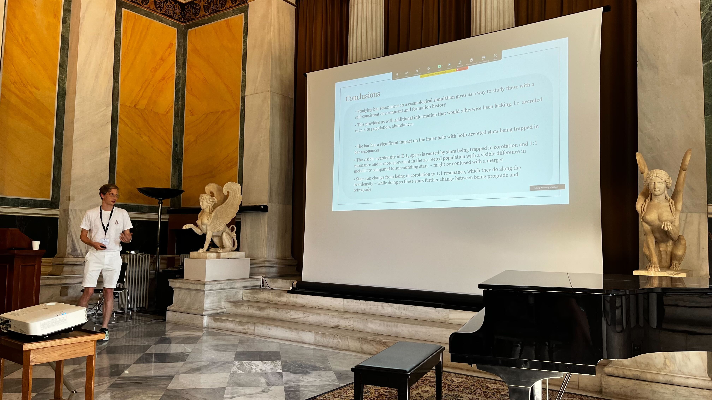
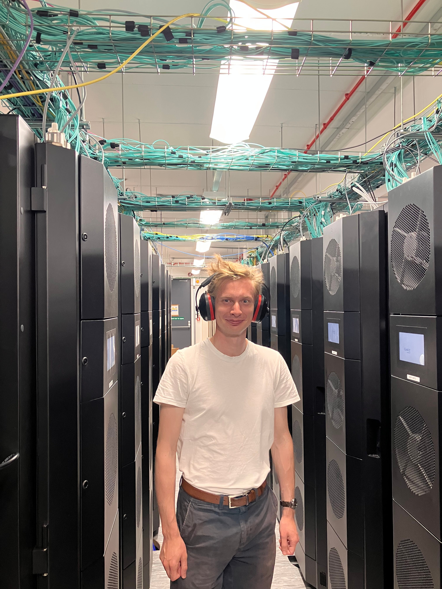

Thomas Tomlinson
I am a third-year PhD student at Durham University studying how stars move within galaxies. By analysing the orbits of stars in cosmological simulations, I investigate how galaxies form and evolve, and what their stellar motions can tell us about the distribution of matter within them.
Much of my work uses the Auriga suite of simulations, which produce realistic Milky Way–like galaxies
and allow us to study the processes that shaped our own Galaxy.
Alongside this, I run my own simulations that explore alternative models of dark matter
in which dark matter particles can interact with one another. By comparing these models with the standard picture,
I aim to understand how the nature of dark matter may influence the structure and evolution of galaxies.
In addition to my research, I enjoy conducting science outreach for children from local schools in the North East, for example by narrating planetarium shows and showcasing the simulations developed at Durham University.
I also demonstrate in undergraduate teaching at the university, including student laboratories.

